Mac中用VSCode调试Python
下面以Mac中为例，详细解释如何用VSCode去调试Python：
安装Python插件
在插件中输入Python，然后点击第一个匹配出来的插件中的Install安装即可，安装后：
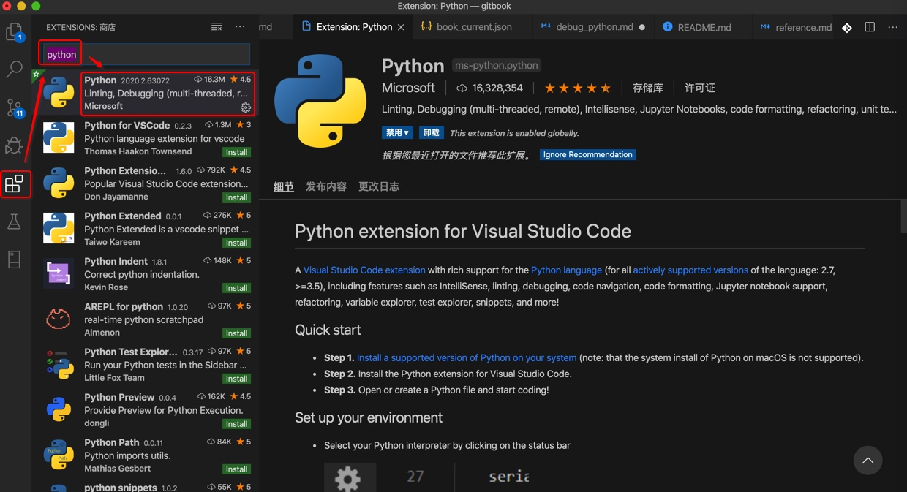
选择Python版本
每次用VSCode打开了Python项目后，左下角会出现：Python extension loading

表示正在加载Python插件，加载完毕后，左下角就会显示出某个版本的Python：
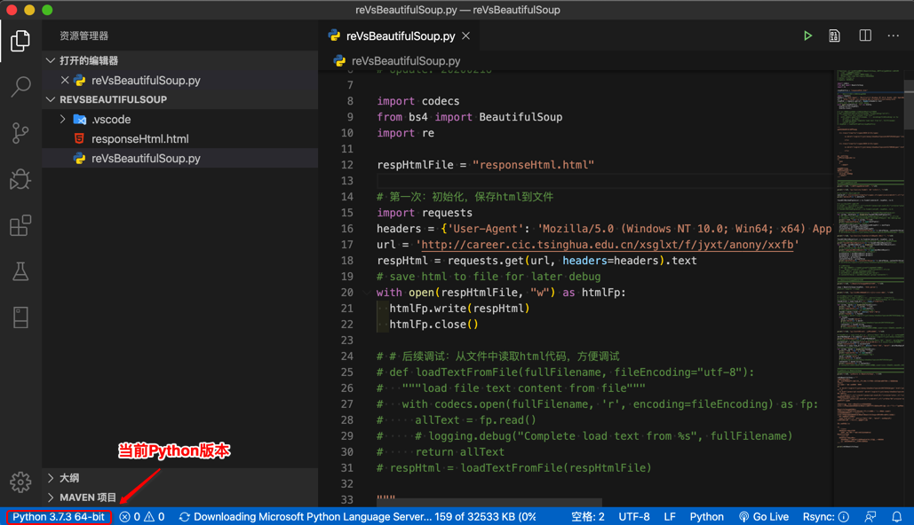
其含义是：当前项目所用的Python版本，此处是Python 3.7.364-bit
意味着，后续调试Python代码，就是用的这个Python版本。
如果这个版本不是你所希望的，则就需要：
选择Python版本 = 切换Python版本 = 设置Python解析器 = 设置Python虚拟环境（如果你用的是某个Python虚拟环境）
假如我此处，之前系统中有安装过另外的版本的Python 3.6.6 64-bit，想要使用该版本，则点击左下角，会弹出列表，选择对应的版本
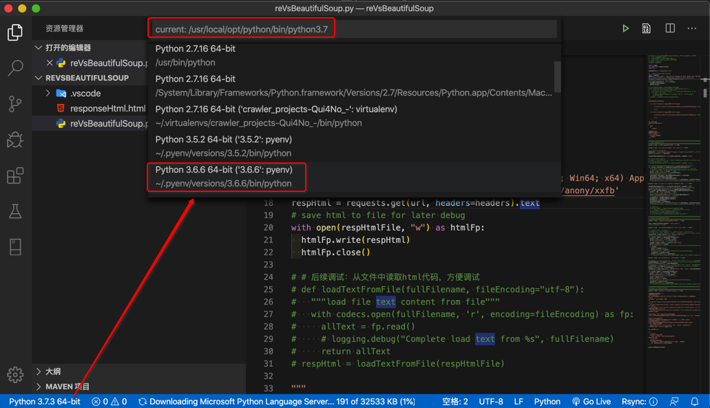
然后做下角即可显示你切换后的Python 3.6.6 64-bit：
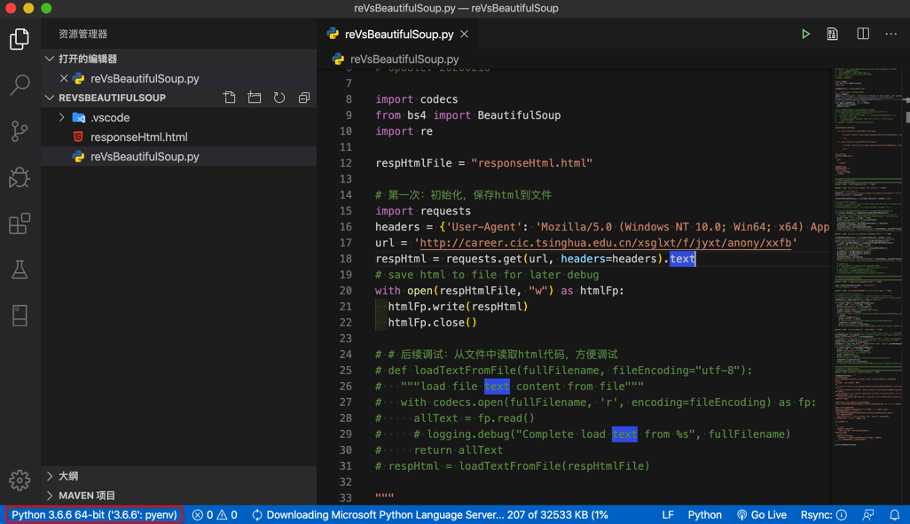
至此已切换成你要的Python版本了。
启动调试和调试配置
由于关系密切，此处把 启动调试 和 调试配置 放在一起解释。
启动调试
启动调试的有多种方式，效果都是一样的：
- 快捷键：
F5 - 菜单：
调试->启动调试 F5 - 通过
运行和调试的tab页去调试- （第一次）没有
launch.json配置文件：（会有）可以点击大按钮：运行和调试Python (F5)
- 注：且点击后，每次都要选择调试的类型
- 一般最常用的就是：
Python File- 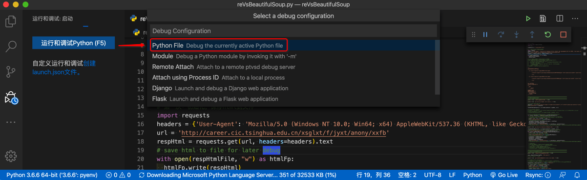
- 表示去调试当前的Python文件
- 一般最常用的就是：
- 已有
launch.json配置文件：有个绿色启动按钮和调试类型选项- 也就可以点击绿色调试按钮去调试了
- 下面就是要去详细解释这部分内容
- 也就可以点击绿色调试按钮去调试了
- （第一次）没有

调试配置
开始调试之前，需要设置和添加好调试的配置。
对于调试的配置，或者说调试的类型的使用，一般有2种：
- 常用：一劳永逸型
- 即：设置一次，每次都无需再设置
- 在项目根目录中创建
./vscode/launch.json配置文件- 在其中加上对应的配置
- 不太常用：每次都选择型
- 即：不创建创建
launch.json配置文件，每次启动都选择一次调试类型- 也就是上面已解释过的：
- 点击
运行和调试Python (F5) - 选择调试类型
- 点击
- -》很麻烦，不太推荐
- 也就是上面已解释过的：
- 即：不创建创建
所以此处主要去解释：
一劳永逸型：创建launch.json配置
自己手动在当前项目根目录下创建./vscode/launch.json配置文件
或者点击创建launch.json文件：
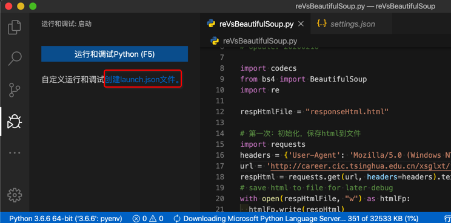
然后选择：Python File

会自动创建调试的配置文件./vscode/launch.json，并根据你前面所选择的调试类型Python File而生成对应的调试配置：
{
// 使用 IntelliSense 了解相关属性。
// 悬停以查看现有属性的描述。
// 欲了解更多信息，请访问: https://go.microsoft.com/fwlink/?linkid=830387
"version": "0.2.0",
"configurations": [
{
"name": "Python: 当前文件",
"type": "python",
"request": "launch",
"program": "${file}",
"console": "integratedTerminal"
}
]
}
效果是：

如此，就是创建完毕调试配置文件了。
之后就是去调试了：
- 确保VSCode当前打开的是你要调试的Python文件
- 点击每行之前去添加断点
- 点击绿色的调试按钮▶️去开始调试

添加了断点后，可以看到左下角出现了断点的文件和行号，再去点击开始按钮▶️去调试：
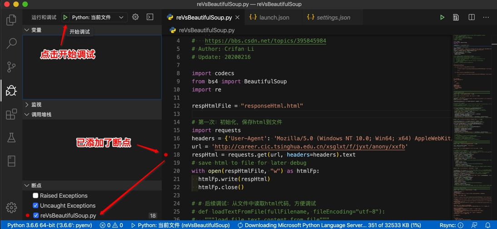
然后就可以看到，正在调试的界面和效果了：

调试界面中的几个区域和对应功能，分别解释一下：
- 左边
- 变量
- 显示当前的各种变量值
- 对于有属性的变量，可以点击绿色按钮，查看具体的值
- 对于有属性的变量，可以点击绿色按钮，查看具体的值
- 显示当前的各种变量值
- 监视Evaluation
- 可以输入变量表达式，查看结果
- 调用堆栈
- 查看文件调用的先后顺序
- 在代码报错时，尤其有用
- 知道出错时，文件调用的先后顺序，才容易找出错误位置和原因
- 在代码报错时，尤其有用
- 查看文件调用的先后顺序
- 断点
- 之前自己添加的所有的断点
- 2个选项：属于高级功能
- Rasied Exceptions=抛出的异常
- 调试期间代码发生异常exception时，代码执行就会暂停
- 就像打了断点的效果一样
- 即使你代码中用try except去捕获了异常，发生了异常，也会暂停
- 调试期间代码发生异常exception时，代码执行就会暂停
- Uncaught Exceptions=未捕获的异常
- 调试期间，代码中没有捕获到的异常，即没有try except对应异常，则此时就会暂停
- Rasied Exceptions=抛出的异常
- 变量
- 右上角
- 调试工具条
- 继续(F5)
- 单步跳过(F10)
- 单步调试(F11)
- =单步进入
- 单步跳出(Shift+F11)
- 重启(Shift+Command+F5)
- 停止(Shift+F5)
- 调试工具条
- 右下角
- 调试输出
- 最开始会输出，启动调试时所用的命令
- 此处是
/Users/crifan/.pyenv/versions/3.6.6/bin/python /Users/crifan/.vscode/extensions/ms-python.python-2020.2.63072/pythonFiles/lib/python/new_ptvsd/no_wheels/ptvsd/launcher /Users/crifan/dev/dev_root/python/reVsBeautifulSoup/reVsBeautifulSoup.py/Users/crifan/.pyenv/versions/3.6.6/bin/python：是当前所用的Python/Users/crifan/.vscode/extensions/ms-python.python-2020.2.63072/pythonFiles/lib/python/new_ptvsd/no_wheels/ptvsd/launcher是当前所用的启动器/Users/crifan/dev/dev_root/python/reVsBeautifulSoup/reVsBeautifulSoup.py：当前被调用的，被调试的Python文件
- 后续代码中print的内容，也会输出到这里
- 此处是
- 最开始会输出，启动调试时所用的命令
- 调试输出


然后继续正常调试
开始调试
开始了调试之后，就可以继续正常调试了。
单步跳过(F10)
继续按F10或点击调试工具栏中的按钮，即可运行当前代码，然后进入下一行并暂停了：

如此，继续一直F10单步调试即可：

单步调试(F11)
而对于如果遇到函数调用：

则可以用F11单步进入该函数中去调试：

而对应的Shift+F11是去跳出当前执行的范围，此处即跳出当前函数，即让当前函数返回：
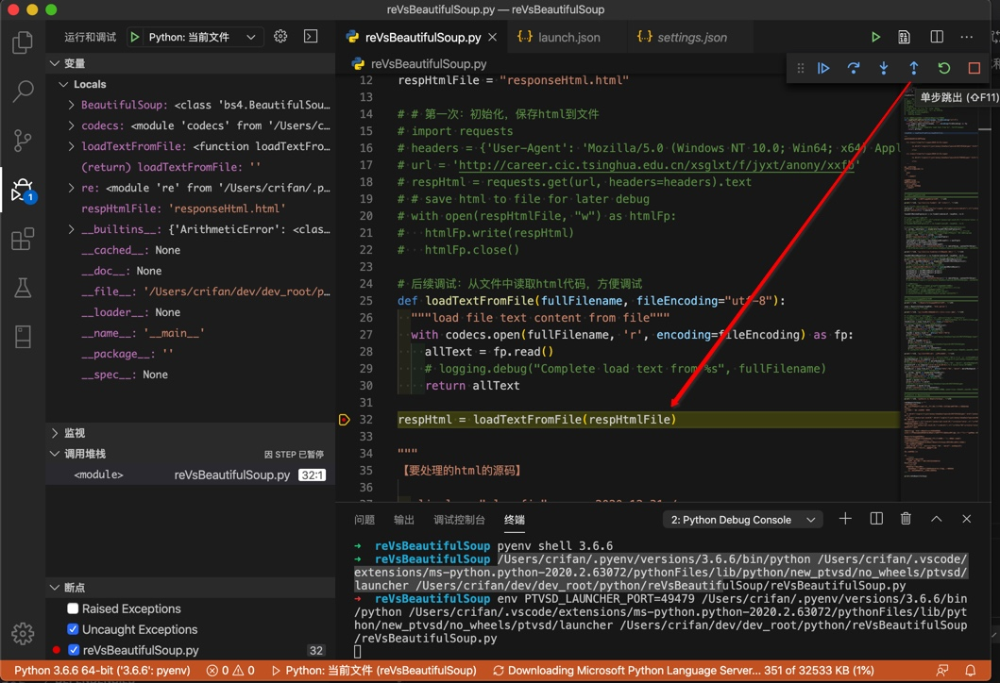
之后即可继续调试。
F5=继续调试
如果调试发现前面代码没问题，那么就可以让其继续运行
就可以F5继续调试，直到新的断点才暂停：

如果后续没有断点，则程序运行完毕，自动停止运行：
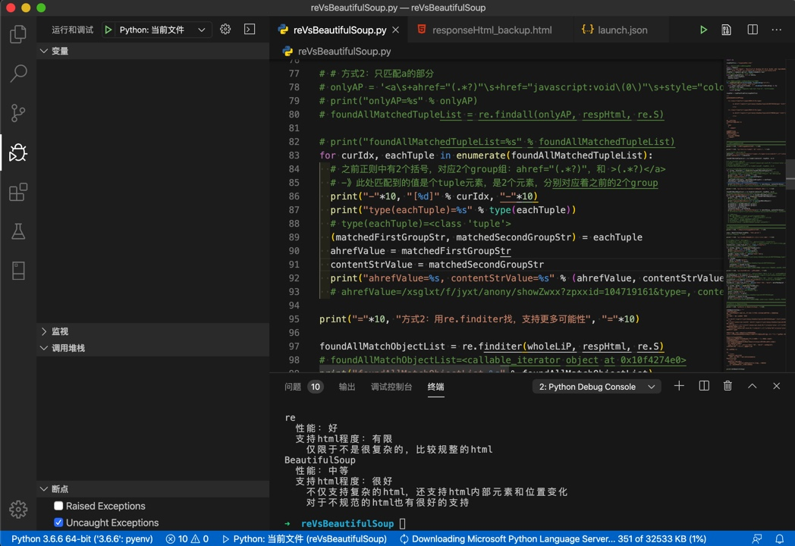
重启(Shift+Command+F5)
对于重启调试，一般能用到的场合是：
调试期间，错过了想要查看的内容。
或者是调试期间，发现代码有问题，顺带在调试期间，就把代码改好了，然后就可以去
点击重启，会让调试重新启动，并运行到（你所设置的断点）的位置
此处可以从终端的log看出，是重启启动了一次调试：
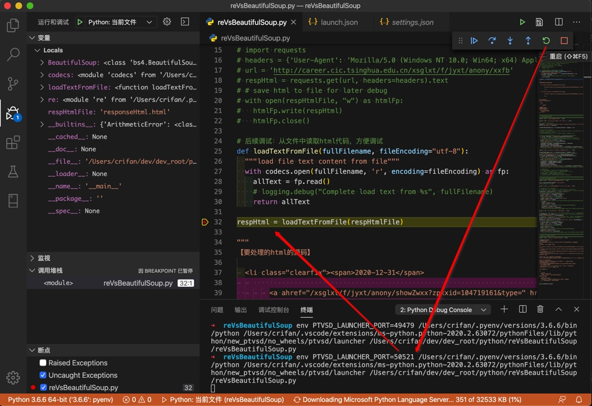
停止(Shift+F5)
如果不想要调试了，则可以点击停止：
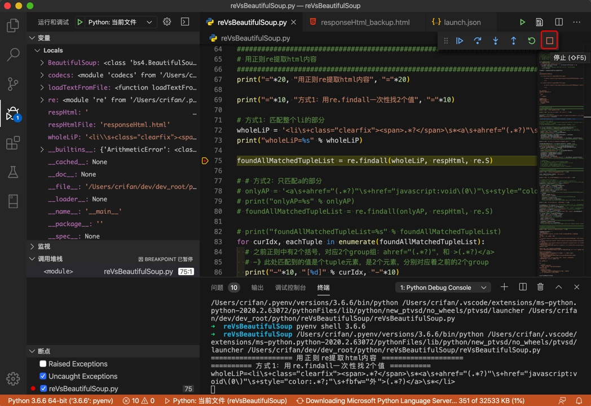
即可停止调试。